![]()
# Core data wrangling & plotting
install.packages("dplyr")
install.packages("hrbrthemes")
install.packages("tidyr")
install.packages("ggplot2")
# Specialized geoms
install.packages("ggbeeswarm")
install.packages("forcats")
# Time series utilities
install.packages("zoo")
# Correlation plotting
install.packages("corrplot")
# Mapping
install.packages("maps")
install.packages("viridis") # for color scales on maps
# (Optional) Color‐blind–friendly palettes
install.packages("viridisLite")Visualize Better with R
Learning Objective
By completing this tutorial, you will:
TODO
- Understand the strengths and limitations of each visualization type.
- Be able to implement and customize these visualizations in
ggplot2and related packages. - Interpret results in the context of social science data exploration.
- Apply best practices to ensure clarity, accessibility, and reproducibility of your plots.
In this tutorial, I’ll walk you through the plots and visual techniques. I’ll share each plot, explaining why you might want to use them, what they reveal, and how to make them.
By the end of this tutorial, you’ll have a handy arsenal of 9 powerful visualization techniques perfect for social science data exploration. Let’s get started!
Target Audience
This tutorial is designed for intermediate users who have already visualized data in R and are looking for more ways to visualize.
Duration
Around TODO minutes.
Use Cases
- TODO
Computational Environment Setup
Ensure you have R (version 3.6.0 or higher) installed on your system.
You can download it from: https://cran.r-project.org/.
Install the required R packages by running:
Example Data
install.packages("curl")Installing package into '/home/dogu3912/R/x86_64-pc-linux-gnu-library/4.3'
(as 'lib' is unspecified)library(jsonlite)query <- "SELECT ?countryLabel ?capitalLabel ?latitude ?longitude ?continentLabel ?area ?population WHERE {
?country wdt:P31 wd:Q6256;
wdt:P36 ?capital.
?capital wdt:P625 ?coord.
BIND(geof:latitude(?coord) AS ?latitude)
BIND(geof:longitude(?coord) AS ?longitude)
?country wdt:P30 ?continent.
?capital p:P2046 ?areaStatement.
?areaStatement psn:P2046 ?areaValue.
?areaValue wikibase:quantityAmount ?area.
?capital wdt:P1082 ?population.
SERVICE wikibase:label {
bd:serviceParam wikibase:language 'en' .
}
}"
url <- paste("https://query.wikidata.org/sparql?query=", URLencode(query), sep="")
headers <- c("application/json", paste("Visualization-Tutorial", R.version.string))
names(headers) <- c("Accept", "User-Agent")
data <- fromJSON(readLines(url(url, headers = headers), warn=FALSE))
data <- t(apply(data$results$bindings, 1, function(row) return(row[1:length(data$head$vars)*3])))
colnames(data) <- sub("(Label)?.value", "", colnames(data))
data <- data.frame(data)
data <- aggregate(data, list(data$country), max)
data <- data[c("country", "population", "area", "longitude", "latitude", "continent", "capital")]
data$area <- as.numeric(data$area)
data$population <- as.numeric(data$population)
data$latitude <- as.numeric(data$latitude)
data$longitude <- as.numeric(data$longitude)head(data) country population area longitude latitude continent
1 Afghanistan 4273156 2.75e+08 69.165833 34.532778 Asia
2 Albania 418495 4.18e+07 19.817778 41.328889 Europe
3 Algeria 2364230 3.63e+08 3.058611 36.776389 Africa
4 Andorra 24042 3.00e+07 1.522222 42.507222 Europe
5 Angola 2487444 1.13e+08 13.234444 -8.838333 Africa
6 Antigua and Barbuda 21394 1.00e+07 -61.844722 17.121111 North America
capital
1 Kabul
2 Tirana
3 Algiers
4 Andorra la Vella
5 Luanda
6 St. John'sInput Data
# 1. load necessary libraries
library(dplyr) # Data manipulation
Attaching package: 'dplyr'The following objects are masked from 'package:stats':
filter, lagThe following objects are masked from 'package:base':
intersect, setdiff, setequal, unionlibrary(tidyr) # Data reshaping
library(ggplot2) # Core plotting package
library(ggbeeswarm) # For geom_beeswarm()ggplot(data, aes(x=continent, y=area)) + geom_point()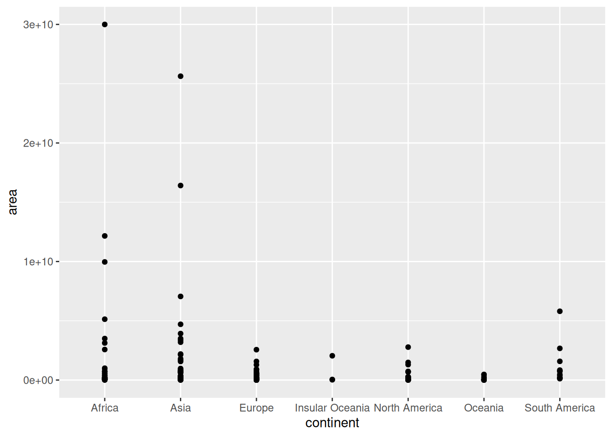
ggplot(data, aes(x=continent, y=area)) + geom_point(alpha=0.2)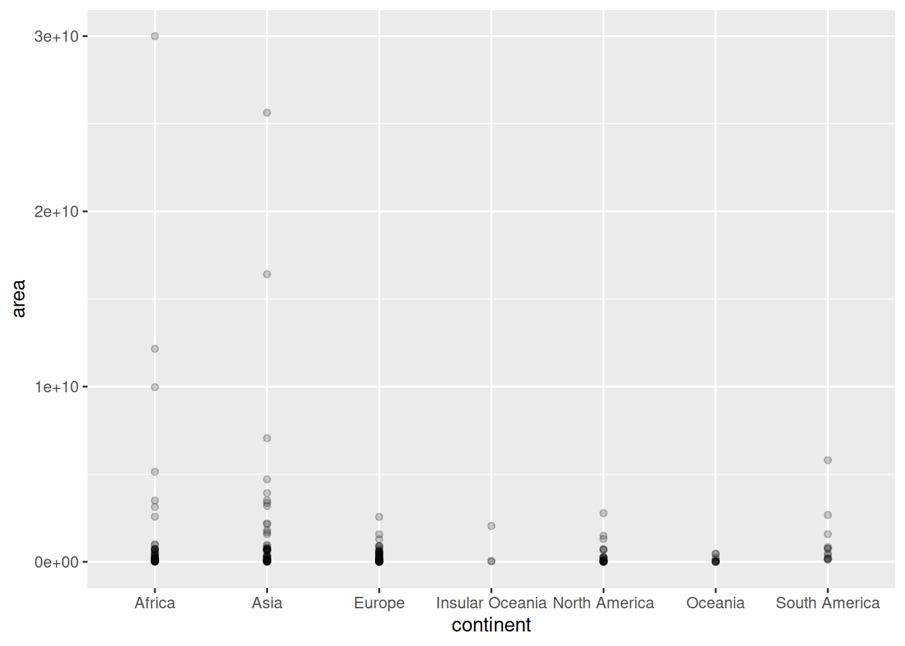
ggplot(data, aes(x=continent, y=area)) + geom_beeswarm()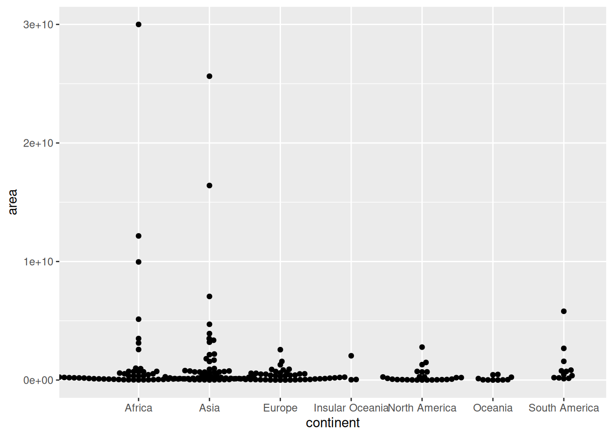
ggplot(data, aes(x=continent, y=area)) + geom_point() + geom_jitter()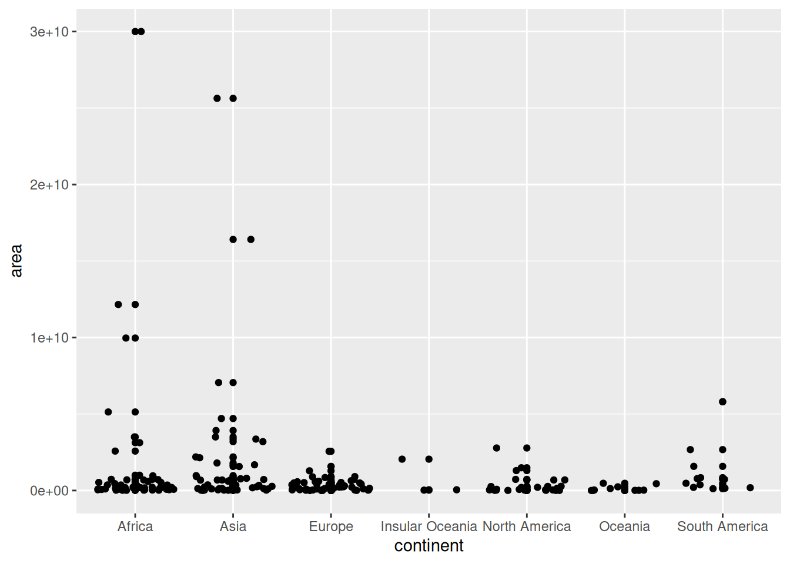
ggplot(data, aes(x=continent, y=area)) + geom_boxplot()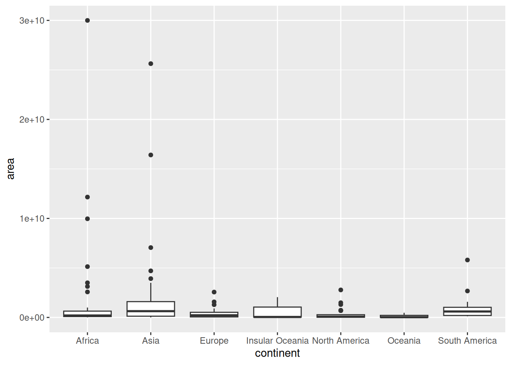
ggplot(data, aes(x=continent, y=area)) + geom_boxplot(outlier.shape=NA) + geom_jitter()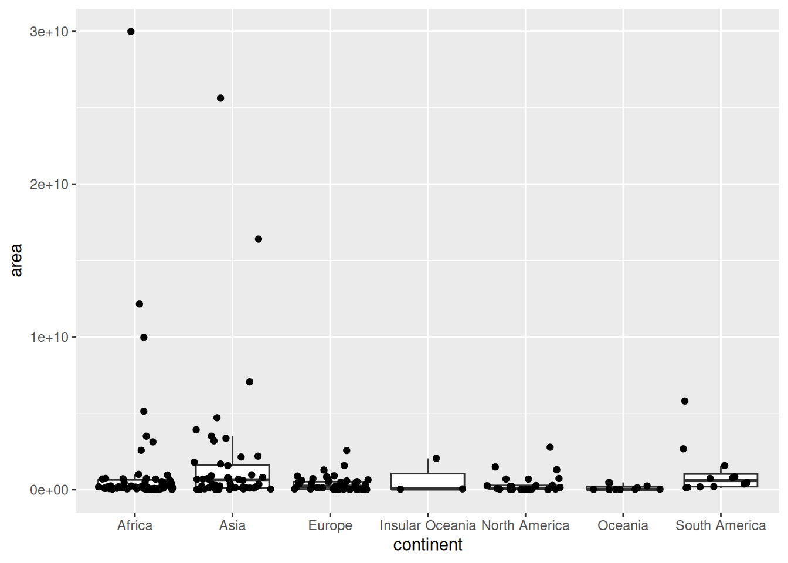
ggplot(data, aes(x=continent, y=area)) + geom_violin()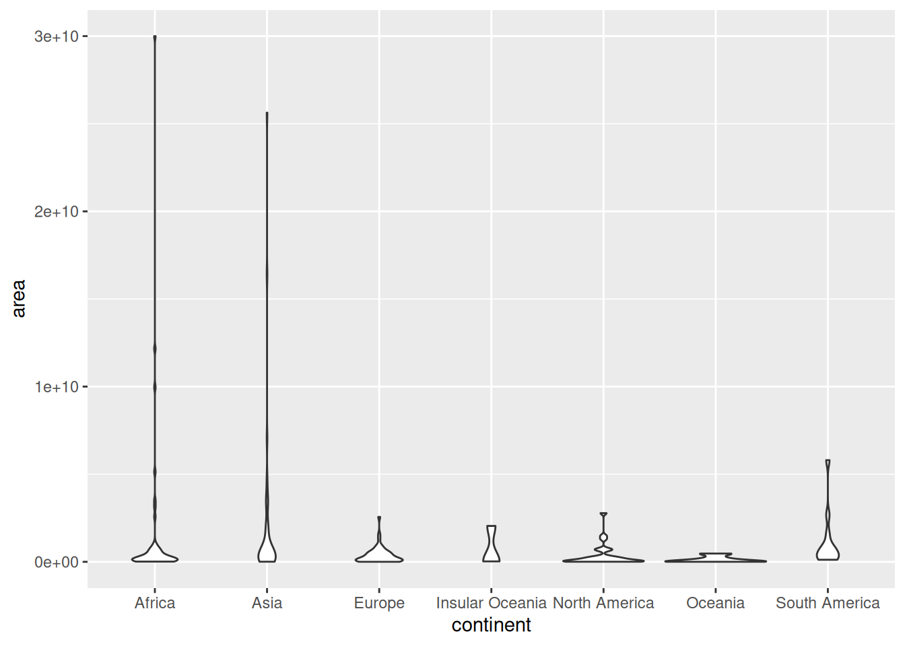
1. Swarm Plots over Scatter Plots
My first big “aha” moment came when I had to compare numerical data (like response scores) across different groups (like age brackets). I found that regular scatter plots overlapped points too much—making it hard to see the data distribution.
# 2. Generate synthetic dataset
set.seed(42)
n <- 100
diagnosis <- sample(c("Group A", "Group B"), n, replace = TRUE)
# Group-specific means and correlations
radius_mean <- rnorm(n, mean = ifelse(diagnosis == "Group A", 14, 15), sd = 0.7)
texture_mean <- rnorm(n, mean = ifelse(diagnosis == "Group A", 18, 22), sd = 2)
perimeter_mean <- radius_mean * 6 + rnorm(n, 0, 3) # correlated with radius
area_mean <- radius_mean^2 * pi + rnorm(n, 0, 30) # correlated with radius
concavity_mean <- rbeta(n, shape1 = ifelse(diagnosis == "Group A", 2, 4), shape2 = 10)
symmetry_mean <- rnorm(n, mean = ifelse(diagnosis == "Group A", 0.18, 0.22), sd = 0.03)
df <- data.frame(
radius_mean = radius_mean,
texture_mean = texture_mean,
perimeter_mean = perimeter_mean,
area_mean = area_mean,
concavity_mean = concavity_mean,
symmetry_mean = symmetry_mean,
diagnosis = diagnosis
)
# 3. Reshape data from wide to long format
# data before reshaping
head(df) radius_mean texture_mean perimeter_mean area_mean concavity_mean
1 14.22535 17.91860 82.06362 657.4595 0.04980446
2 13.45131 14.89691 80.85503 543.4563 0.13594223
3 15.10301 20.33434 87.02257 738.5759 0.19059652
4 14.45003 17.45271 87.27023 629.8173 0.11951213
5 15.06283 21.06431 94.27011 699.1906 0.30047417
6 15.19359 19.52350 88.05989 760.8471 0.24337320
symmetry_mean diagnosis
1 0.1628694 Group A
2 0.1706679 Group A
3 0.1598575 Group A
4 0.1752798 Group A
5 0.1920608 Group B
6 0.1605097 Group B# - pivot_longer(): collapse multiple feature columns into key-value pairs
df_long <- df %>%
pivot_longer(
cols = radius_mean:symmetry_mean,
names_to = "feature",
values_to = "value"
)
# data after reshaping
head(df_long)# A tibble: 6 × 3
diagnosis feature value
<chr> <chr> <dbl>
1 Group A radius_mean 14.2
2 Group A texture_mean 17.9
3 Group A perimeter_mean 82.1
4 Group A area_mean 657.
5 Group A concavity_mean 0.0498
6 Group A symmetry_mean 0.163 # 1. Create a swarm plot
# - aes(x=feature, y=value): map feature names on x-axis and values on y-axis
# - color by diagnosis group
# Swarm plot
swarm_plot <- ggplot(df_long, aes(x = feature, y = value, color = diagnosis)) +
geom_beeswarm(alpha = 0.8, size = 2) +
theme_minimal(base_size = 14) +
labs(
title = "Swarm Plot: Distribution of Mean Features by Diagnosis Group",
subtitle = "Swarm plot reveals every individual observation without overlap",
x = "Feature",
y = "Value",
color = "Diagnosis Group"
) +
theme(
axis.text.x = element_text(angle = 45, hjust = 1),
legend.position = "top"
)
print(swarm_plot)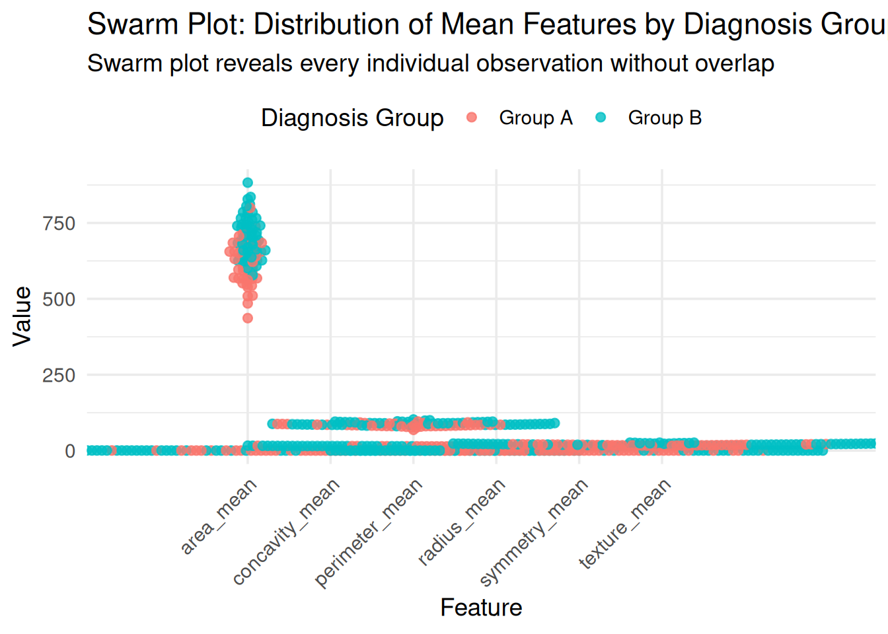
1.1 Context and Motivation
When comparing numerical values across categories (e.g., satisfaction scores by age group), simple scatter plots may suffer from overplotting: points overlap and hide density information. Swarm plots (bee swarms) solve this by adjusting point positions to minimize overlap, making every observation visible.
1.2 Step-by-Step Code
# 2. Scatter plot for comparison
scatter_plot <- ggplot(df_long, aes(x = feature, y = value, color = diagnosis)) +
geom_point(alpha = 0.8, size = 2, position = position_jitter(width = 0)) +
theme_minimal(base_size = 14) +
labs(
title = "Scatter Plot: Distribution of Mean Features by Diagnosis Group",
subtitle = "Scatter plot suffers from overplotting—points overlap and hide density",
x = "Feature",
y = "Value",
color = "Diagnosis Group"
) +
theme(
axis.text.x = element_text(angle = 45, hjust = 1),
legend.position = "top"
)
print(scatter_plot)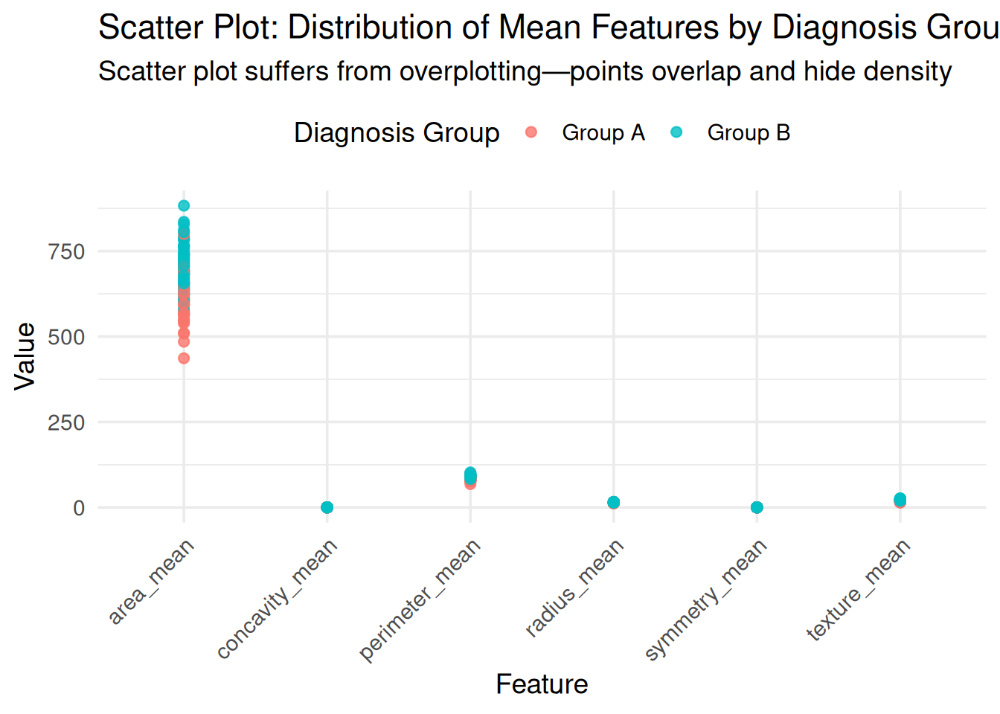
1.3 interpretation of why choose swarm plot over scatter plot
Swarm plots are preferred over scatter plots when visualizing categorical groupings of continuous data because they prevent overplotting—each data point is visible and not hidden behind others. In scatter plots, especially with many overlapping points, it’s hard to assess the true distribution or spot clusters and outliers. Swarm plots arrange points to minimize overlap, making the sample size, density, and group differences much clearer at a glance.
1.4 Explanation & Interpretation
- geom_beeswarm(): Positions points in a compact, non-overlapping arrangement. Useful for moderate sample sizes (<200).
- Transparency (
alpha): Helps reveal point density when slight overlap occurs.
Interpretation: In the resulting plot, clusters of points indicate where many observations fall. Differences in the vertical spread between Group A and Group B highlight variability in that feature.
1.5 Customization Tips
- Point shape & size: use
shape=andsize=insidegeom_beeswarm().
- Color palettes: integrate
scale_color_brewer(palette = "Set1")orscale_color_viridis_d()for colorblind-friendly palettes.
- Grouping multiple categories: for more than two groups, ensure contrast in color or shape.
1.6 Common Pitfalls
- Large datasets: for >500 points, swarm plots can become cluttered; consider violin or box plots instead.
- Uneven group sizes: extremely small groups may appear as lone points; annotate directly if needed.
2. Density Plots
Next, I wanted to understand the distribution of responses for certain questions (like “level of trust in institutions”) across two demographic segments. A bar chart wasn’t capturing the shape of each distribution. A histogram might work, but I wanted a smoothed look.
2.1 Context and Motivation
Histograms show frequency distribution through bars, but bin choice can obscure distribution shape. Density plots provide a smooth estimate of the distribution, enabling direct comparison of multiple groups.
2.2 Step-by-Step Code
# Create density plot
density_plot <- ggplot(df, aes(x = area_mean, fill = diagnosis)) +
geom_density(alpha = 0.5, adjust = 1.2) + # adjust smoothness parameter
theme_minimal(base_size = 14) +
labs(
title = "Density Plot of Area Mean by Diagnosis Group",
subtitle = "Smoothed distribution of 'area_mean' across groups",
x = "Area Mean",
y = "Density",
fill = "Group"
)
print(density_plot)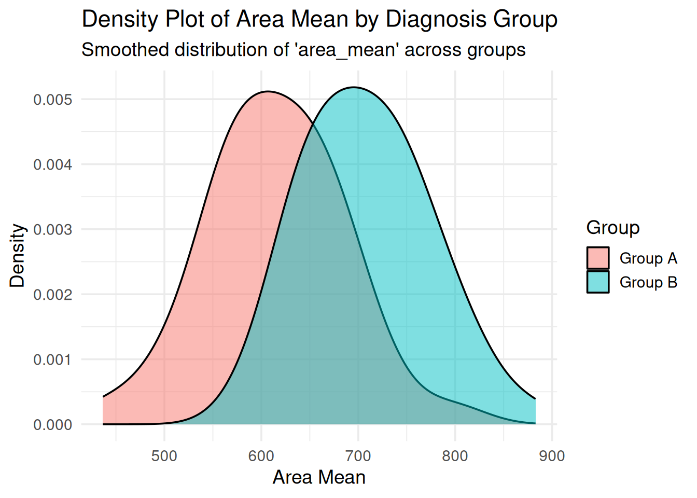
2.3 Explanation & Interpretation
- adjust: controls bandwidth of density estimation (higher = smoother).
- alpha: semi-transparency allows overlapping fills to be distinguishable.
Interpretation: Overlap between curves indicates similar distributions. Divergence reveals differences in modality or skewness.
2.4 Customization Tips
- To overlay median lines: add
geom_vline(data = summary_df, aes(xintercept = median), linetype = "dashed").
- Compare more than two groups: use faceting (
facet_wrap(~diagnosis)).
- Show rug plots:
geom_rug(alpha = 0.3)adds tick marks for individual observations.
2.5 Common Pitfalls
- Misleading smoothing: overly small
adjustcan produce spurious bumps; overly large can mask real structure.
- Overlapping groups of very different sample sizes: transparency alone may not suffice—consider facetting or scaling.
3. Box Plots with Jitter
Sometimes, I needed a quick sense of how responses (like “support for policy X”) varied across multiple categories (such as different regions). A box plot shows median, quartiles, and outliers, but I still wanted to see some individual points.
3.1 Context and Motivation
Boxplots summarize distribution via quartiles, but hide individual points. Adding jittered points atop the boxplot provides both summary and raw data.
3.2 Step-by-Step Code
Simulate data with varied group sizes
library(ggplot2)
set.seed(123)
data_box <- data.frame(
region = rep(c("North","South","East","West"), times = c(150, 150, 30, 70)),
score = c(rnorm(150, 50, 10), rnorm(150, 55, 8), rnorm(30, 65, 12), rnorm(70, 52, 9))
)# Create boxplot + jitter
box_jitter <- ggplot(data_box, aes(x = region, y = score, fill = region)) +
geom_boxplot(width = 0.6, outlier.shape = NA) + # remove default outliers
geom_jitter(width = 0.2, size = 1, alpha = 0.6, color = "black") +
theme_minimal(base_size = 14) +
labs(
title = "Regional Score Distributions with Box Plot + Jitter",
subtitle = "Combining summary statistics and individual data points",
x = "Region",
y = "Score"
) +
theme(legend.position = "none")
print(box_jitter)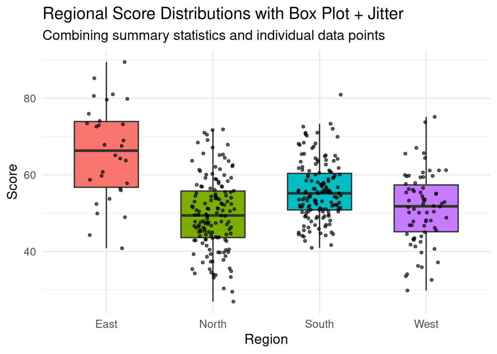
3.3 Explanation & Interpretation
- geom_boxplot(width, outlier.shape): Adjust box width and hide default outliers (since jitter layer shows them).
- geom_jitter(width): Spread points horizontally to prevent overlap—
widthcontrols spread.
Interpretation: The thickness of the box reflects interquartile range, whiskers show variability, and jitter points reveal clusters or potential subgroups.
3.4 Customization Tips
- Use
scale_fill_viridis_d()for accessible color maps.
- Add notched boxplots (
geom_boxplot(notch = TRUE)) to compare medians with confidence intervals.
3.5 Common Pitfalls
- Excessive jitter on large samples: reduce
alphaor sample points for clarity.
- Misalignment: ensure point layer is added after boxplot layer.
4. Violin Plots
I wanted to see not just the median and quartiles but the full kernel density shape of my data. A violin plot shows both summary statistics and density.
4.1 Context and Motivation
Violin plots combine density estimation with a mirrored shape around the axis, showing full distribution shape and optional internal boxplot.
4.2 Step-by-Step Code
library(ggplot2)
library(dplyr)
library(forcats)
# Load example dataset
url <- "https://raw.githubusercontent.com/holtzy/data_to_viz/master/Example_dataset/10_OneNumSevCatSubgroupsSevObs.csv"
data_violin <- read.csv(url) %>%
mutate(tip_pct = round(tip/total_bill * 100, 1))# Create violin plot
violin_plot <- ggplot(data_violin, aes(x = fct_reorder(day, tip_pct), y = tip_pct, fill = sex)) +
geom_violin(position = position_dodge(width = 0.9), alpha = 0.7, trim = FALSE) +
geom_boxplot(width = 0.1, position = position_dodge(width = 0.9), outlier.shape = NA, alpha = 0.5) +
coord_cartesian(ylim = c(0, 40)) +
labs(
title = "Tip Percentage by Day of Week and Gender",
subtitle = "Violin plots show kernel density; boxplots show quartiles",
x = "Day of Week",
y = "Tip (% of Total Bill)",
fill = "Gender"
) +
theme_minimal(base_size = 14)
print(violin_plot)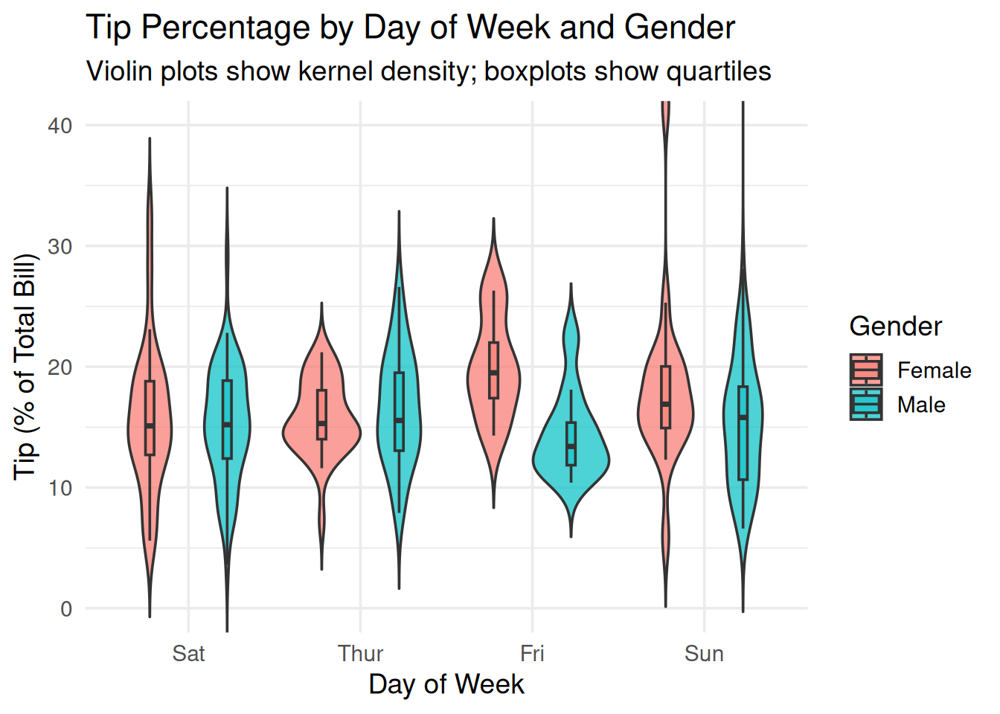
4.3 Explanation & Interpretation
- trim = FALSE: Display full tail of density beyond data range.
- geom_boxplot(): Adds quartile summary inside violins.
Interpretation: Wider sections of the violin indicate where tips concentrate. Differences between days/genders highlight behavioral patterns.
4.4 Customization Tips
- Adjust bandwidth with
geom_violin(..., adjust = 1.5).
- Flip coordinates (
coord_flip()) for horizontal violins if labels overlap.
4.5 Common Pitfalls
- Very small sample sizes: density estimation may be misleading—consider using jitter only.
5. Bar + Line Combo Plot
When analyzing time-series survey data (e.g., monthly participant counts), I wanted both bar-chart values and a trend line.
5.1 Context and Motivation
Combining bars (absolute values) with a line (trend) highlights both period-specific counts and overall trajectory in time-series data.
5.2 Step-by-Step Code
Loading the air passengers dataset.
library(ggplot2)
library(zoo)
data("AirPassengers")
df_air <- data.frame(
Month = as.Date(as.yearmon(time(AirPassengers))),
Passengers = as.numeric(AirPassengers)
)Now we plot the Bar + Line Combo Plot.
# Create bar + line chart
ggplot(df_air, aes(x = Month)) +
geom_col(aes(y = Passengers), width = 25, fill = "steelblue", alpha = 0.7) +
geom_line(aes(y = Passengers), size = 1.2, color = "darkred") +
labs(
title = "Monthly International Airline Passengers (1949–1960)",
subtitle = "Bar = monthly count; Line = overall trend",
x = "Month",
y = "Number of Passengers"
) +
scale_x_date(date_labels = "%Y-%m", date_breaks = "1 year") +
theme_minimal(base_size = 14) +
theme(axis.text.x = element_text(angle = 45, hjust = 1))Warning: Using `size` aesthetic for lines was deprecated in ggplot2 3.4.0.
ℹ Please use `linewidth` instead.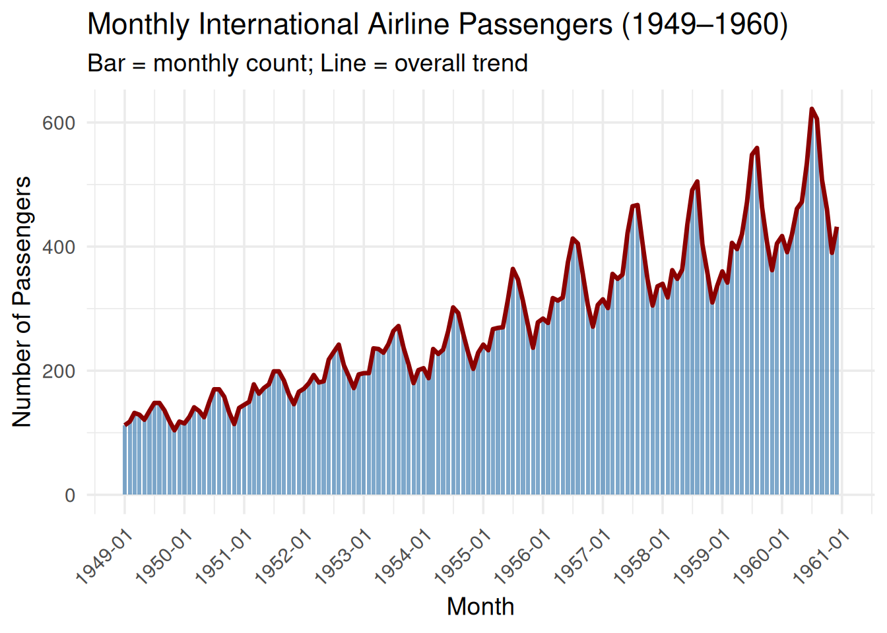
5.3 Explanation & Interpretation
- geom_col(): Creates bars using data values directly.
- geom_line(): Plots a continuous trend line across points.
- scale_x_date(): Customizes date axis formatting.
Interpretation: Seasonal peaks in summer months emerge clearly via bars, while the red trend line contextualizes year-over-year growth.
5.4 Customization Tips
- Add moving average: compute a rolling mean (e.g.,
df_air$MA <- rollmean(df_air$Passengers, 12, fill = NA)) and overlay withgeom_line(aes(y = MA), linetype = "dashed").
5.5 Common Pitfalls
- Date axis overcrowding: adjust
date_breaksor rotate labels.
- Inconsistent widths: ensure
widthaligns with date units (days).
6. Correlation Heatmap
I needed an overview of how numerical features related. Rather than a numeric matrix, a correlation heatmap highlights associations at a glance.
6.1 Context and Motivation
When exploring relationships among many numerical variables, a correlation matrix is informative but hard to parse. A heatmap visually encodes correlation strength and sign.
6.2 Step-by-Step Code
library(corrplot)
# Use `df` from section 1: numeric columns only
num_cols <- df %>% select(radius_mean, texture_mean, perimeter_mean, area_mean, concavity_mean, symmetry_mean)
corr_matrix <- cor(num_cols)corrplot(
corr_matrix,
method = "shade", # use shaded squares
type = "upper", # show only upper triangle
tl.col = "black", # variable names in black
addCoef.col = "white", # add correlation coefficients
number.cex = 0.7, # size of coefficients
tl.srt = 45, # rotate labels
title = "Correlation Heatmap of Synthetic Features",
mar = c(0, 0, 2, 0) # margin for title
)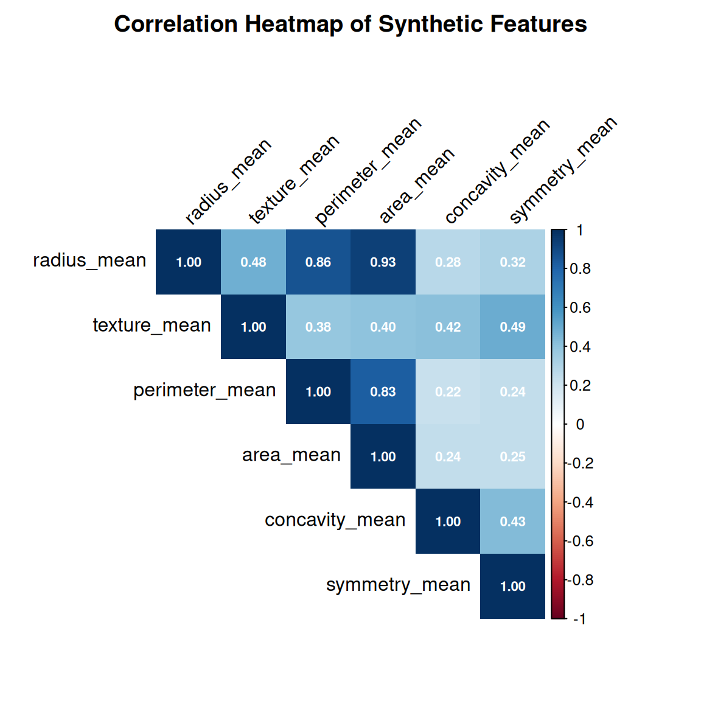
6.3 Explanation & Interpretation
- method: defines tile style (
shade,color,circle).
- type = ‘upper’: hides redundant lower triangle.
- addCoef.col: overlays numeric r-values.
Interpretation: High positive correlations (e.g., perimeter_mean vs. radius_mean) appear as darker tiles; near-zero appear as lighter.
6.4 Customization Tips
- Use
corrplot.mixed()to combine circle and number views.
- Cluster variables with
hc.order = TRUE, order = "hclust"for dendrogram ordering.
6.5 Common Pitfalls
- Correlation does not imply causation: always inspect scatter plots for nonlinear patterns.
- Including non-numeric data: ensure you select only numeric columns.
7. Scatter Plot with Regression Line
I often wondered if one factor could predict another—like, does “annual income” predict “charitable donations”?
7.1 Context and Motivation
Scatter plots reveal relationships between two continuous variables. Overlaying a fitted regression line helps assess linear association visually.
7.2 Step-by-Step Code
# Reuse `df` from section 1
ggplot2::theme_set(theme_minimal(base_size = 14))scatter_reg <- ggplot(df, aes(x = radius_mean, y = area_mean, color = diagnosis)) +
geom_point(alpha = 0.7, size = 2) +
geom_smooth(method = "lm", se = TRUE, linetype = "dashed") +
labs(
title = "Scatter Plot with Linear Regression Line",
subtitle = "Relationship between radius_mean and area_mean by group",
x = "Radius Mean",
y = "Area Mean",
color = "Diagnosis"
)
print(scatter_reg)`geom_smooth()` using formula = 'y ~ x'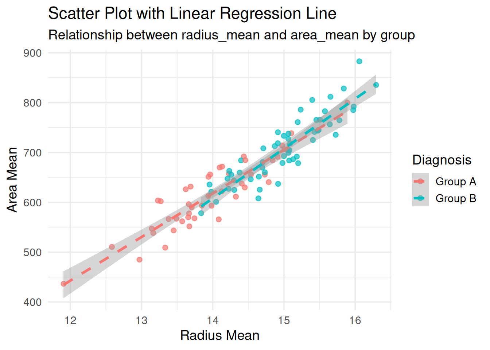
7.3 Explanation & Interpretation
- geom_smooth(method = ‘lm’, se = TRUE): adds linear model fit with shaded confidence band.
Interpretation: The slope of the dashed line indicates the strength and direction of the linear relationship. Overlapping confidence bands suggest similar slopes across groups or pooled data.
7.4 Customization Tips
- To fit separate models per group: include
aes(group = diagnosis)insidegeom_smooth().
- For nonlinear trends: use
method = 'loess'.
7.5 Common Pitfalls
- Overfitting with LOESS on large samples—consider limiting points or bandwith.
- Outliers can disproportionately influence linear fit.
8. Stacked Bar Charts
8.1 Context and Motivation
Stacked bar charts show total counts per category and the composition of subgroups within each bar—ideal for categorical breakdowns.
8.2 Step-by-Step Code
set.seed(123)
df_stack <- data.frame(
Region = sample(c("North", "South", "East", "West"), 200, replace = TRUE),
Preference = sample(c("Support", "Oppose", "Neutral"), 200, replace = TRUE)
)stacked_bar <- ggplot(df_stack, aes(x = Region, fill = Preference)) +
geom_bar(position = "stack") +
labs(
title = "Stacked Bar Chart: Preference by Region",
subtitle = "Shows both total counts and subgroup composition",
x = "Region",
y = "Count",
fill = "Preference"
) +
theme_minimal(base_size = 14)
print(stacked_bar)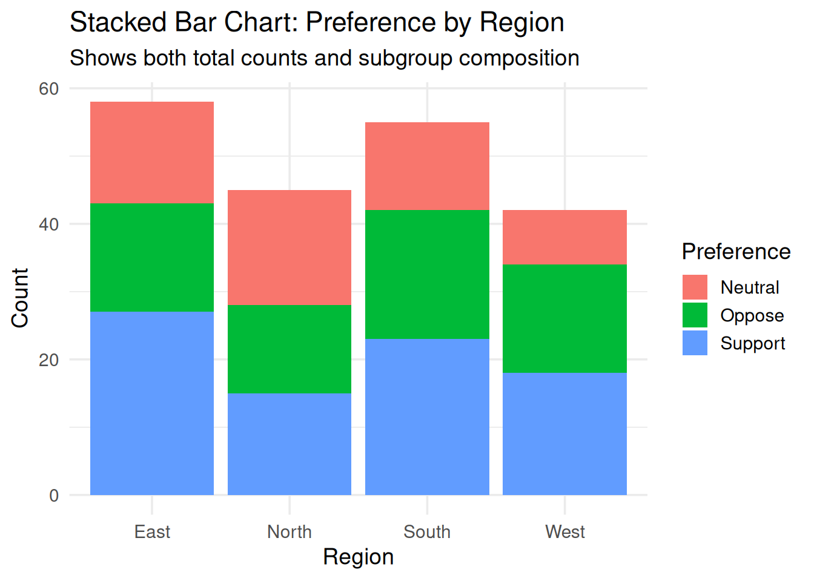
8.3 Explanation & Interpretation
- position = ‘stack’: default stacking of bars.
Interpretation: The height of each bar indicates total respondents; colored segments reveal proportions of each preference.
8.4 Customization Tips
- For relative proportions: use
position = "fill"to normalize bar heights to 1 (100%).
- Add labels inside segments with
geom_text(position = position_stack(vjust = 0.5), size = 3).
8.5 Common Pitfalls
- Too many categories: slices become too thin to interpret; consider faceting instead.
- Unordered factors: set explicit factor levels for logical ordering.
9. Geographical Maps: Choropleth & Point Map
I noticed that survey responses and social indicators often have strong geographic patterns—regions with similar characteristics cluster together. Traditional charts couldn’t reveal these spatial relationships. Mapping data onto geographic outlines and points immediately highlights regional hotspots and geographic trends.
9.1 Context and Motivation
Spatial visualizations reveal geographic patterns. Choropleth maps color regions by aggregated values; point maps overlay events or counts at coordinates.
9.2 Step-by-Step Code for US Choropleth
library(ggplot2)
library(maps)
library(dplyr)
# Load map data for US states
states_map <- map_data("state")
# Create synthetic social index data per state
state_data <- data.frame(
region = tolower(state.name),
social_index = runif(length(state.name), min = 0, max = 100)
)
# Merge map coordinates with social index
us_data <- left_join(states_map, state_data, by = "region")choropleth <- ggplot(us_data, aes(x = long, y = lat, group = group, fill = social_index)) +
geom_polygon(color = "white") +
coord_fixed(1.3) +
scale_fill_viridis_c(option = "plasma") +
labs(
title = "Choropleth: US Social Index by State",
subtitle = "Synthetic data demonstrating thematic mapping",
fill = "Social Index"
) +
theme_minimal(base_size = 14) +
theme(
axis.text = element_blank(),
axis.title = element_blank(),
panel.grid = element_blank()
)
print(choropleth)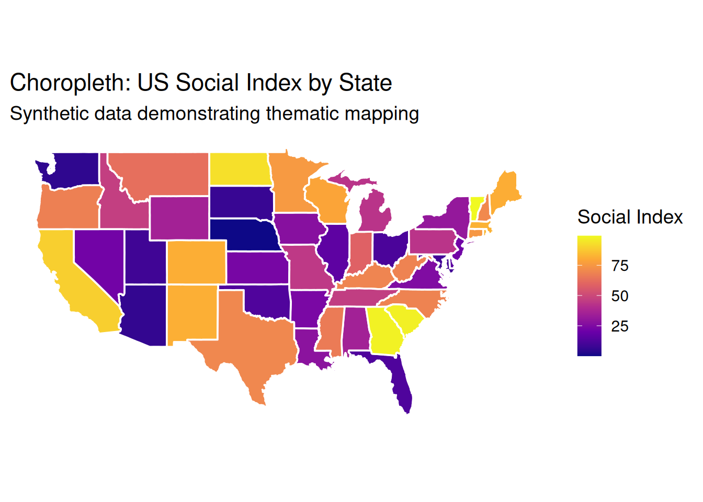
9.3 Explanation & Interpretation
- coord_fixed(1.3): ensures correct aspect ratio for maps.
- scale_fill_viridis_c(): continuous palette that is perceptually uniform.
Interpretation: Darker states have higher social index values in this synthetic example; look for regional clusters (e.g., coastal vs. inland patterns).
9.4 Step-by-Step Code for World Point Map
# Load world map data
world_map <- map_data("world")
# Create synthetic event data for cities
set.seed(456)
cities <- data.frame(
city = paste("City", 1:30),
long = runif(30, -180, 180),
lat = runif(30, -90, 90),
event_count = sample(1:100, 30, replace = TRUE)
)
point_map <- ggplot() +
geom_polygon(
data = world_map,
aes(x = long, y = lat, group = group),
fill = "gray90",
color = "white"
) +
geom_point(
data = cities,
aes(x = long, y = lat, size = event_count),
alpha = 0.7
) +
coord_fixed(1.3) +
labs(
title = "Global Points: Synthetic Social Event Counts",
subtitle = "Size of point corresponds to event frequency",
size = "Event Count"
) +
theme_minimal(base_size = 14) +
theme(
axis.text = element_blank(),
axis.title = element_blank(),
panel.grid = element_blank()
)
print(point_map)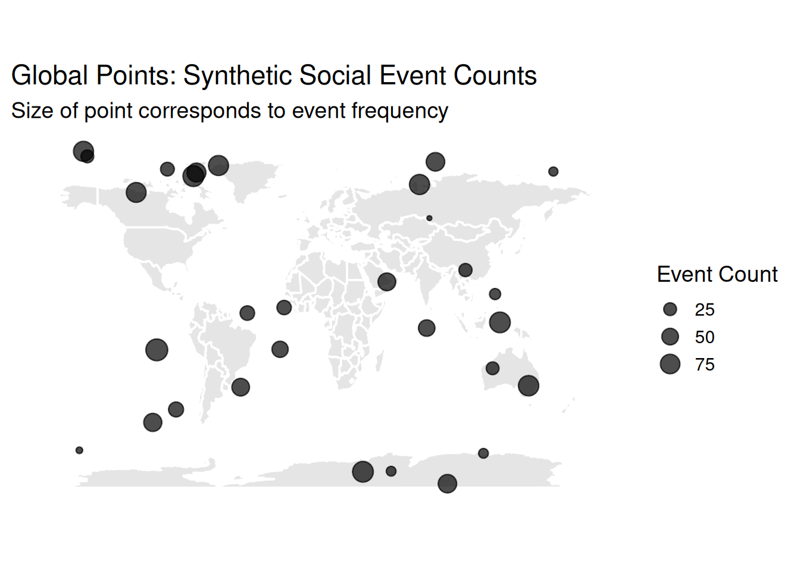
NOTE - since this is a random generated data. the data points are not interpretable
9.5 Customization Tips
- Use
coord_quickmap()for faster rendering on large world datasets.
- Cluster overlapping points with
geom_jitter()on lat/long or use packages likesf+ggspatial.
9.6 Common Pitfalls
- Ignoring map projections: for publication, consider appropriate projections with
coord_map()orsf. - Overplotting in points map: adjust transparency or bin with heatmaps.
Conclusion
Throughout this tutorial, we’ve covered:
- Swarm Plots: Reveal individual observations clearly.
- Density Plots: Smooth distributions for group comparison.
- Box + Jitter: Combine summary statistics and raw data.
- Violin Plots: Show full density shapes with internal summaries.
- Bar + Line Combo: Dual view of counts and trends.
- Correlation Heatmap: Visual overview of variable associations.
- Scatter + Regression: Assess linear relationships with confidence bands.
- Stacked Bar Charts: Display totals and compositions of categories.
- Geographic Maps: Thematic and point-based spatial visualizations.
Use these techniques as a foundation. Customize further with color palettes, themes, annotations, and interactivity (e.g., with plotly or shiny). Share reproducible code, include captions explaining insights, and follow accessibility guidelines to make your research inclusive.
References
- R for Data Science (Wickham & Grolemund): Comprehensive guide to data manipulation and visualization in R.
- Data to Viz: https://www.data-to-viz.com/ – A decision tree for selecting appropriate chart types.
- ggbeeswarm: https://cran.r-project.org/package=ggbeeswarm
- corrplot: https://cran.r-project.org/package=corrplot
- AirPassengers dataset documentation: https://stat.ethz.ch/R-manual/R-devel/library/datasets/html/AirPassengers.html
Contact
Questions? Reach out at shyam.gupta@gesis.org